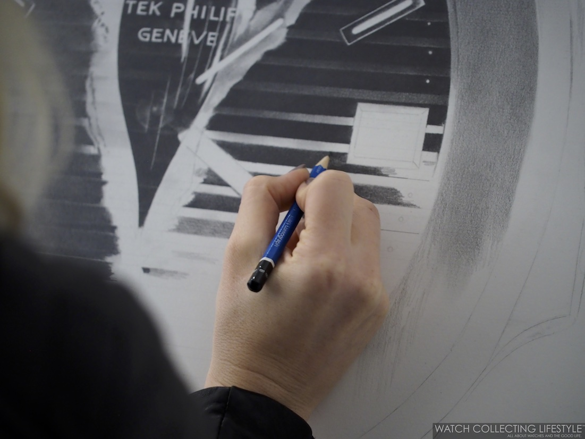

Pencil Drawing
Pencil drawing, drawing executed with an instrument composed of graphite
enclosed in a wood casing and
intended either as a sketch for a more elaborate work in another medium, an exercise in visual expression,
or a finished work. Pencil marks vary according to the hardness of the
graphite lead in the shaft. The harder the lead the finer the line. Pencils
are a dry medium, in contrast to pens which apply liquids.
